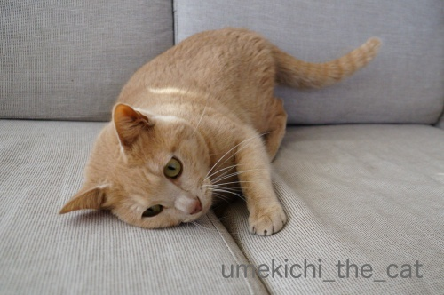
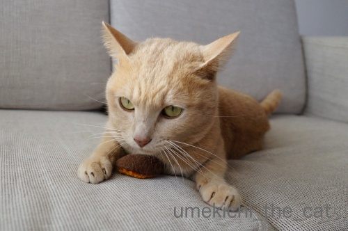
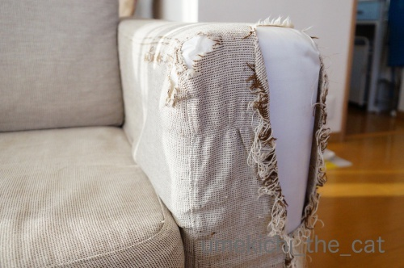
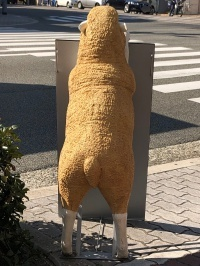
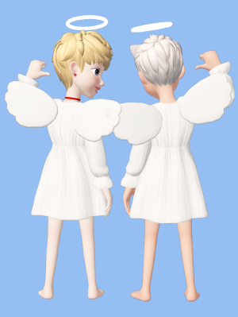

スキマスキーの遊び方 [梅吉]
お気に入りのおもちゃは
（ビリビリビリー！）

クッションの隙間とか

こういう隙間に挟まっていると楽しさ倍増！
（めりめりめりめりー！！）
自分が隙間に挟まるのも好きだけどおもちゃが挟まってるのも大好物です。

なかなか取れないのが楽しい♪
（バリバリバリバリー！！！）


盛り上がってます。

喜んでくれるのでついついソファを遊び場にしちゃいます。
生地がビリビリ、バリバリ、めりめり音を立ててもいいんです。

梅吉さんが毎日元気に遊んでくれるし爪とぎとしても活用しているので

うちのソファは悲惨なことにー0(≧▽≦)0
ソファは無印のものなんですが専用のカバー類はもう廃盤。
生地を選んでオーダーすれば作ってくれるんですが
新調したってすぐにズタボロになるのは目に見えてます。
皮のソファに買い替えたって同じでしょう。
なんかもういいやーって(⌒-⌒;
糸が長くなっているところを切ってしまうと
次々と糸くずが出てくるのでそのまま放置w
びろんびろんとフリンジ状態ですw
伸縮してフィットするソファカバーもありますが
あの素材も梅吉にとっては爪とぎ以外の何物でもありません。
ボロになりにくい素材のマルチカバーでソファを覆ってまーす(*>艸<)
(本体までボロボロにされるとさすがに困るので
被害を受けやすいところは薄いナイロン生地を貼り付けてあります。）
にゃんこと暮らしていると（猫に対してのみ）
どんどん寛容になっていきますよね(^_－)☆
〜おまけ〜
お散歩コースにあるケーキ屋さんの看板を持つ羊さんの後ろ姿。
通るたびにニヤニヤが止まらん、という話を某所でしていたら
「梅吉くんに似てるんじゃ？」というご指摘。


確かに！豊満な梅吉って感じw
ニヤニヤが止まらない理由がわかりましたー0(≧▽≦)0
先日は宝塚の男役トップスターになりました。
パジャマ姿のお嬢さんをエスコートしてみる。
宝塚市にある宝塚大劇場内にトップスターなりきりメイク＆衣装で
写真を撮ってくれるところがあるのをご存知でしたか(≧▽≦)
天使はいたずらっ子のイメージで。イタズラが過ぎて叱られた２天使。
でもちゃんとネロ（フランダースの犬）を迎えに行ってあげるんですよ。
天使にロックオンされたらどんな気分なんだろう・・・・・

素足がなまめかしい「てん使」さんとツーショット＾＾
天使の後ろ姿って見たことありましたか？
有名絵画にも登場してみました！
みけらんじぇろせんせい、らふぁえろせんせい、ごめんなさいm(_ _)m

カフェオレ色の梅吉

梅吉 2023年8月10日 永眠


梅吉と出会った譲渡会

犬猫の理由なき殺処分ゼロ
妄想広告
UMEKICHI 光

爆発的に早い！
時々攻撃的！
Thanks to Mr.Boss365
爆発的に早い！
時々攻撃的！
Thanks to Mr.Boss365

ソファーカバーをすっかり切り裂いた梅吉さんのお仕事ぶりは見事です。生地にもよるのでしょうけど、昔うちにあったソファーはバリバリになっても破けはしなかったです。でも二度とソファーを買う気になれなかったので畳生活になりました。羊と梅吉さんは色とポーズが似てますねぇ。
絵画タッチZEPETOはよくできてます~。
by zombiekong (2019-02-28 00:31)
ソファー、やられてますねーー^m^
隙間に隠れたおもちゃを探して遊ぶだなんて、なかなか高度だわ。
実家のミイちゃんだと、出そうとして余計と奥に押し込んで、出せないーってなって、諦めるってことになりそう。
羊さんそっくりの梅吉君の後ろ姿、これ、しっぽぶんぶんしてません？
そのしっぽがなんだか楽しそうで、いいんですよねーー。
ZEPETOメイクもかなり力はいってますね！
その上、一言挨拶が面白くて。素足の天使さんが「ほんまは足冷たかってん」ってのとか、ニヤニヤ見ちゃってました。
てんてん天使はてん使！なるほど！
by ChatBleu (2019-02-28 06:02)
あのイスは車の前席なんですよ。
私専用のソファーを作ろうと思って
廃車からいただいた物なのですが
ニャンに蹴られ齧られてあの姿に（爆）
by ぽちの輔 (2019-02-28 06:27)
おや？梅吉さん、体重増加かと・・・そんなわけないですね^^
by ニコニコファイト (2019-02-28 07:03)
ニャンコってどうして自分でハードル上げて
遊ぶのが好きなんでしょうねぇ(⌒-⌒; )
うちもソファの隙間におもちゃをねじ込んだ後で
顔や手を突っ込んでワチャワチャしてますw
そしてうちのソファも当然巨大な爪とぎになってます(⌒-⌒; )
マルチカバーで保護してきましたが、
先代猫からの爪とぎなのでそろそろ買い替えたい( ^ω^ )
でも、買い替えてもやっぱり巨大な爪とぎにしかならないし、
どうせすぐにボロボロにされるならまだいいかって思ってます=(^.^)=
by ニッキー (2019-02-28 07:49)
スキマスキー♪ ものすごく楽しそうですねぇ～
ソファがボロボロになっても
梅吉さんが快適に過ごせるなら、いいですよねぇ～(#^.^#)
我が家も見た目よりもＬｅａの快適仕様です（笑
by きぃ (2019-02-28 07:57)
奥歯に物が挟まって取れない 辛さもあるけれど 取れそうで取れない楽しさもありますね〜梅吉さんにはソファも負けちゃいますね 寛容な気持ち 素敵よ！(^^)
天使の後姿 NICE〜♪
by チャー (2019-02-28 10:37)
うちにいた猫も隙間が好きでした
出れなくて ニャーニャー呼ぶんですよね（笑）
by (。・_・。)２ｋ (2019-02-28 12:22)
ひゃっほ～♪ まさに芸術は爆発だ～っ！ですね(≧▽≦)
もうね、ウチは何か破れていたり、糸がいっぱい飛び出ていたり、傾いていたり、全く気にならなくなりました^^;
こてつが誤飲さえしない状態なら何でもありです。
スキマに手を突っ込んでる梅吉さんの真剣なお顔が可愛すぎ♪
これはマタタビクッキーですね！
by ゆきち (2019-02-28 12:52)
梅吉さん、結構やっちゃってくれてますねｗ
登場する擬音の数々・・・。どれも耳馴染みのあるものばかり(^-^;
どこのお家もみんな一緒だね。
こんな可愛い姿を見られるだけで幸せだもの。
家も危ないもの以外はやりたいようにさせています。
そうそう！にゃんことわんこだと家の壊され方(w)が違う気がするの。
家はまんべんなく壊されてる感じだよ。えへへっ(≧▽≦)
ちぃ天使。めっちゃ可愛いよね。キューピッドにもなれそう。
絵画風も素敵！部屋に飾りたいよ～♪
by emi (2019-02-28 15:16)
うちのソファーもひどいものでした。
帆布製のファブリックだったのですがもう前も横もフリンジ状態。
爪が引っ掛かって研ぎ甲斐があるんでしょうね。
ボロンボロンになったので丸ごと粗大ごみへGoとなりました(^^;
クッキーのようなおもちゃかじってる感じがナイス(笑
ZEPETOちゃんと絵画にもなっててクオリティ高いです。
by marimo (2019-02-28 15:53)
ちぃさん こんにちは
ソファーのビリビリは梅吉ちゃんの勲章ですね。
楽しそうです。
by SORI (2019-02-28 16:48)
こんばんは。
ニャンズ、隙間！！好きですよね。
梅吉画伯のソファーもいい仕上げのアート作品になってます！！
小生猫、ソファーには幼少の頃多少反応しましたが・・・
現在は、昼間の寝床と認識？無反応で綺麗な状態。両親思いで助かってます。
「羊さんの後ろ姿」長さでは梅吉君の勝利です！！
羊さん同様に看板持たせて「看板猫？」にしましょう。
ZEPETO！！天使と絵画コラボ、コピー入れたらポスターになりそう！？(=^･ｪ･^=)
by Boss365 (2019-02-28 20:05)
梅吉さん、器用ですね。
でも隙間のオモチャが取れなくなっちゃうことないのかなあ？^^;
ビリビリアンビリーバブル・ソファー、すごいことになってますね！
よほど爪とぎが気持ちがいいのですね。^^)
「宝塚」と聞くと、なぜか炭酸せんべいを思い出します。^^;
by yes_hama (2019-02-28 20:21)
よし!げっとや！！と
喜んでいる5枚目の写真の浮いた足の可愛いこと（梅吉さんは2枚目ですぞ）
ソファのフリンジ状態、イマドキでナウイ（笑）です。
羊くんの後ろ姿、確かに豊満な梅吉さんです。
梅吉さんはシュッとして格好良いです。
タカラヅカ、ヤッタネって感じ。
『天使』と『てん使さん』ねぇ（笑）座布団1枚。
名画とのET天使、可愛い仕草（笑）
by kiki (2019-02-28 21:05)
ソファーもそうですが、うちは壁紙がひどい。
もう、開き直っています。
わが家の歴史だと、自分に言い聞かせています＾＾
by riverwalk (2019-02-28 21:05)
この時期の天使は、足がシモヤケになりそうです＾＾；
by てんてん (2019-02-28 22:25)
梅吉さん、盛り上がってますねー！
嬉しそうだとこっちも嬉しくなっちゃうから‥
お見事なソファ！ うちにもいろんな痕跡がありますよ～見慣れちゃって日頃はなんと思わないけど。ソファに敷いてあるカバーも（全部覆うタイプではないので）革の部分もビリビリ‥ソファの隙間にはいろんな物が入ってます＾＾；
by sana (2019-02-28 23:07)
見えないソファ下の手っても、ワタワタやっている様子が伺えます*^^*
しかし派手にやってくれちゃってますね！
ヒツジさんのお尻かわいい（*´∀｀*）確かに似てる（笑）
てん天使^^
しかしみなさま髪の毛の色が・・・不良になっちゃったんですか・・・（違
by Ja-Kou66 (2019-02-28 23:25)
うちのソファーや壁もボロボロですが、そのまんまにしてます。
そこら中爪研ぎ場だったので、それを見て懐かしんでます(^_^)
隙間になんか入っているかもしれないので、今度探してみようかな・・。
by kou (2019-03-01 00:15)
ひょえー！ソファー凄いことになってますね！
でも皆様のコメント見てると、どこも同じなんですな(^_^;)
by よーちゃん (2019-03-01 09:05)
うちも、カバーを掛けていないとスキマスキーですわぁｗｗ
それにしても梅吉君激しすぎるーーー(笑)
わかります。カバー新調してもすぐにボロボロ（あ、まちがい、フリンジ状態ｗｗ）は目に見えてる！
そうなのー。看板の羊さんを見たとき、
ありゃ？梅吉君？って思ったよ^m^
例のクジラ写真は、次回のZEPETOで使わせて貰うつもりよ^m^
これだけ天使ちゃんが揃うと可愛いね♪
by リュカ (2019-03-01 09:36)
ソファきれいだななんて思ってたらひじ掛けはそんなことになっていましたか!!
新調したってすぐにズタボロ←うんうん。そうなんだよね(T_T)
寛容になるのは猫に対してのみ 当然です(*^^*)
by palpal (2019-03-01 14:43)
ソファーで爪研ぎされると凄いことになっちゃうのですね！
梅吉さんには関係無いことですね(^^)
by ma2ma2 (2019-03-01 17:41)
ソファ派手にやられちゃってるね（ﾟ□ﾟ）
by 英ちゃん (2019-03-01 23:50)
おぉ、なんと芸術的なまでに愛されているソファーよ♡
ここまでくると、ソファーさん冥利につきていると思われます(^.^)
さすが、梅吉さん♪ いい仕事、してはりますにゃあ♪
by のらん (2019-03-02 07:52)
梅吉さんながい(^-^)
後ろ姿、たしかに面影ありますね。
by ふにゃいの (2019-03-02 22:46)
ちぃさん フォローありがとです～
インスタ 使い方良く分かんない＾＾：
梅吉さんの写真 ZEPETOで使えそうなのいっぱいありますね(￣ー￣)ﾆﾔﾘ
by てんてん (2019-03-02 23:38)
zombiekongさん＞
梅吉の活躍っぷりもあっぱれなんですが
うちのソファの生地は特別爪とぎ向きだと思われます(*>艸<)
我が家の子になって数日後にはばりばりめりめりやってたので
こうなるのは早いうちから覚悟してましたよーwww
畳生活、それもアリですね＾＾
うちも不思議と畳では爪とぎしません。
絵画タッチのZEPETOは写真加工アプリの勝利でーす(≧▽≦)
ChatBleuさん＞
ソファ、4年でここまでなりましたw
今回は肘掛メインに移しましたが背面もすごいです。
特に背面の下。
寝転がりながらバリバリ爪たててソファをぐるりと移動していきます(⌒-⌒;
まんべんなくフリンジ加工を、と気を配ってくださっている・・・
羊似の後ろ姿はベランダに来ているすずめを観察しているところです。
本にゃんはじっと身を潜めているつもりなんですが
ご推察の通りおしっぽは高速ブンブンでーす(*>艸<)
温室育ちゆえ殺気が足りないのかすずめさんにはバカにされっぱなしです！
てんてん天使と書いてなんかしつこいな・・・と。
おお！「てん使」と閃きましたー(^_－)☆
ぽちの輔さん＞
下僕のものはにゃんずのもの、あるあるだったんですねー＾＾
ぽちの輔さん宅のあの椅子を拝見するたび
「うちだけじゃない！」と勇気付けられる思いです(*>艸<)
ニコニコファイトさん＞
梅吉、２歳くらいの時結構太っていたので
こんな豊満な感じだったかも、です(≧▽≦)
ニッキーさん＞
巨大な爪とぎと化している・・・・・
力強く勇気付けられるコメントをいただきました！
ソファが猫さま仕様になっているおうちはウチだけじゃないのですよね。
そしてなかなか買い換える踏ん切りがつかないのもw
うちもまだまだ買い換えずに頑張れそうです0(≧▽≦)0
きぃさん＞
うちの子優先、自然そうなっちゃいますよね＾＾
安全＆喜んでくれるは飼い主の何よりの喜びですもの。
ちなみにソファもぼろぼろですが
私のデニムも相当キテますw
私も爪とぎの一つなもので(⌒-⌒;
チャーさん＞
取れなくて辛いもの、取れなくて楽しいもの。確かに〜！
このおもちゃ普通に転がっているとそれほど喜ばないんですが
隙間に詰めるともう大変(≧▽≦)
この世にマルチカバーがある限りソファは大丈夫！！
天使の後ろは私が「どんななってるんだろう」との興味からでした＾＾
2kさん＞
助けを求めるなんてなんてかわいらしい・・・
うちは粗暴なやんちゃ坊主なものでそういう状況の時は
周りの物を破壊しながら出てこようとします(-_-メ)
本にゃんが怪我しなきゃオッケーですけどw
ゆきちさん＞
ソファは派手〜にやってくれましたw
レースのカーテンも幼い頃のカーテン登りでボロボロ・・・
これもいいやって(⌒-⌒;
人間がしでかしたことは腹たちますが
梅吉がやったと思った途端「元気に頑張ったね」「元気が一番」と
言えるようになった自分を褒めてあげたいです(*>艸<)
御察しの通りこれがマタタビクッキーです！
送られてきた当初はお口にあがあが詰め込もうとしたので
（食べようとしているわけではなかったです）
要監視のおもちゃでしたが最近は普通に遊べるように。
でもこてつくんは誤飲しちゃうかなぁ・・・
emiさん＞
ああ！ここにも心強い仲間が(≧▽≦)
破壊のされ方が違うのわかります！
にゃんこは布類＆壁紙の被害が多いけどわんこは木のもの、だよねw
テーブル＆椅子の脚がやられてるお家、たくさん見ました＾＾
ソファだったら布よりも本体の木の枠組み
クッションは詰め物を出したりね。
でもそんな些細なことよりわんこにゃんこがくれる喜びの方が大きいものー！
私の天使はいたずらも含めてキューピットだよねー。
emiさんたちは４大天使！
なんでも用事を言いつけてくださいwww
marimoさん＞
帆布製！引っ掛かりが抜群な最適素材ではないですかw
うちのソファの素材も帆布っぽいんですがもっと柔らかくて・・・
なのでビリビリでーす(⌒-⌒;
我が家のボロボロ系はもう一つあって私のデニム。
梅吉が私で爪を研ぎます。
若者みたいにユーズド加工のデニムでもないので
こっちはなるべく買い換えるようにしてますよ(-_-メ)
梅吉が遊んでるのは「またたびクッキー」です。
http://francezuki-de.com
のサイトの製品。
梅吉はまたたびにあまり反応しない子なんですが
ここのだけは別。お試しあれ！
SORIさん＞
ソファは梅吉が頑張ってユーズド加工してくれました(*>艸<)
楽しく加工、大変ありがたいですwww
Boss365さん＞
すももちゃんがいつもソファでくつろいでいるのを見て
ソファがキレイだなぁ・・・と羨ましく見てました。
決められた場所でしかしない？本当にご両親思いの良い子です！
梅吉のソファ破壊もブログネタ提供、という意味では親思いですけどw
梅吉が「看板猫」になったら長いので
宣伝がたくさん盛り込めるでしょうか(*>艸<)
その線で売り込んでみようかな♪
yes_hamaさん＞
隙間のおもちゃが取れない時は下僕がちゃんと
取れなそうで取れる位置に移動してあげますよ(≧▽≦)
それが下僕の務めですものー！
宝塚、有馬温泉とセットの御記憶でしょうか。
私はまだ炭酸せんべい＆有馬温泉未体験です。
近いのでいつでもいけるや、と油断しているパターンw
kikiさん＞
梅吉は２枚目だけど５枚目がお気に入り！
座布団３枚進呈です0(≧▽≦)0
５枚目写真の浮いた足は全開の白パンツとともに私もツボでした。
それにとっても楽しそうでしょう＾＾
宝塚、娘役だったら単に可愛い系になっちゃうのですが
男役だと色々盛り込めて楽しかったです。
これもある意味お着替えゲーム。kikiさんもいかがですか？(*>艸<)
映画のET、あの指タッチの有名なシーンは
この（本物の）絵画からヒントを得たんだそうですよ(^_－)☆
by ちぃ (2019-03-03 15:07)
riverwalkさん＞
はい＾＾時々写真に写りこむ階段を見て
にゃんさんのご活躍を想像しておりました。
そして「うちだけじゃない！」と心強く思っておりましたーw
「我が家の壁紙に歴史あり」「ソファに歴史あり」
動物を飼っているうちの格言？名言？になりそうですね(*>艸<)
てんてんさん＞
足、ちべたかったですよねー。
天使もゆるくない（北海道弁w=大変みたいなw）です(*>艸<)
インスタは時々覗かせていただきますね＾＾
そして私もちゃんと活動しなければ！
sanaさん＞
ソファやあちこちのボロ、日頃は見慣れてて平気。
そうなんですよー。
で、私は梅吉の写真を撮って写り込んだボロ家具を見てびっくり(◎_◎)
流石に使えない、とボツにした写真は数知れず、ですw
隙間のものは梅吉が大変な執念で全部出すので
今のところ後日発掘されるものは無しで済んでます(≧▽≦)
Ja-Kou66さん＞
見えない手、感じていただいてありがとうございます＾＾
そうとうわちゃわちゃとほってるんですよねー。
そうしてさらにソファがボロボロに！
天使もてん使もみんな平たい顔のハーフなんですよ(*>艸<)
kouさん＞
そうかー。
お空に行っちゃった子の場合はボロボロも思い出に＾＾
今でもこっそり爪とぎにいているかも知れませんよ。
キズ、増えていませんか？
ソファの隙間、冷蔵庫の下はざっくざくお宝が出てくると思いまーす(*>艸<)
よーちゃん＞
どこかにボロボロのあるお家、多いなと実感しました(*>艸<)
私は写真に何気に写っているよそのお家のボロボロを見ると
「頑張っている子がいるなー！」とニヤニヤしちゃいますw
リュカさん＞
4年かけてこんなにこなれた感じにしてくれましたーw
背面なんんてリュカさんがうちに来てくれた時より
さらにすごいことになってますw
まんべんなくフリンジ(*>艸<)
寝転んでソファに爪をかけながらずりずり移動していくんだけど
「やめてよー」と言いながら二人とも笑って見てます。
羊看板、こんど正面から撮ってこなきゃ。
後ろ姿に気を取られて忘れてました(⌒-⌒;
palpalさん＞
ソファ、写真に写ってるところは比較的キレイなんだけど
ここもボロボロになるのは時間の問題ですw
いーの、いーの(≧▽≦)
梅吉がボロボロにするならオッケーです！！
ma2ma2さん＞
梅吉にとってソファはでっかい爪とぎですからー。
第一バリバリしても誰も怒らない・・・www
英ちゃんさん＞
すごいでしょー(*>艸<)
もう見慣れてすっかり感覚が麻痺してますwww
のらんさん＞
梅吉の芸術的センスが光る作品でしょう(*>艸<)
うちのソファは通常の使われ方の他に
ニャンコが喜ぶ爪とぎ＆遊び場所としてお値段以上の活躍です♪
ボロボロを見慣れているので普段は何とも思わないのですが
ブログに使おうと写真を見て時々ぎょっとしてますけど(⌒-⌒;
ふにゃいのさん＞
そうなんです。この梅吉は長いw
ベランダに来ているすずめさんを覗き見てどんどん長く(*>艸<)
羊さんとは色もよく似てました。
いままでなんで梅吉に似ているって気づかなかったんだか(｣ﾟﾛﾟ)｣
by ちぃ (2019-03-04 14:32)
こんにちは✿
リュカさんのところなどで拝見してお邪魔しました。
梅吉くん、ミルクティ色でかわいいですね♪
うちも隙間とか大好物です。そしてソファなどは
ボロボロにされます(ﾉω･､)
この羊さんの看板、あのお店ですね？？
お散歩コースにあるとはうらやましいです♪
by カトリーヌ (2019-03-05 16:10)
カトリーヌさん＞
コメントありがとうございます♪
梅吉の被毛、ちょっと変わっていて可愛いでしょう？
（すみませんw初っ端から親バカ炸裂ですwww）
子供の頃はもっと薄くてまさにミルクティだったのですが
最近は色が濃くなってきて「大人のオ・ト・コ」のカフェオレ色です(*>艸<)
あの羊の看板でお店がわかるとは！
生粋のなにわっ子でいらっしゃいますか？
私はおっとの転勤で大阪に住み始めて今年で丸7年目の道産子です＾＾
あのお店はお散歩コースですが我が家はもう少し南にあるでっかい神社のあたりです。
おっちゃんがステテコで歩いていうような下町ですよw
ぜひぜひまたのご訪問、お待ちしておりますm(_ _)m
by ちぃ (2019-03-06 21:30)